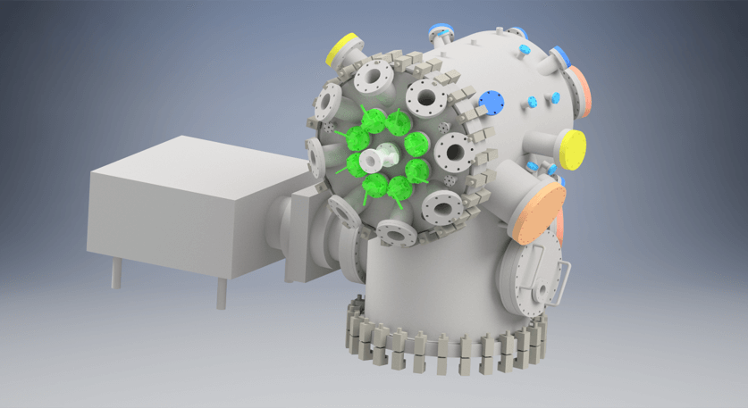

Hey I'm Niklas, a current Graduate student focusing on Mechanical Engineering at the University of Georgia. In addition to working on my Master's Thesis, at the University I am heavily involved with the UGA Small Satellite Research Laboratory (SSRL) which is building UGA's first two satellites (SPOC & MOCI) to launch into LEO - the first one (SPOC) currently awaiting deployment from the ISS. As "CAD Specialist" on the Mechanical Team in the SSRL, I have worked on both satellites, designed ground support equipment and developed instruments for our vacuum chamber. Since my first semester, I have also been part of the UGA Society of Automotive Engineers (SAE). The SAE team took part in the Lincoln Formula SAE Competion in 2019.
Modeling and Simulation of Self-Synchronizing Mechanical Systems
March 2019 - Now
For the past two and a half years I have been conducting research with the help of the UGA Dynamic Devices and Solutions Lab. If certain conditions are met, mechanical systems can exhibit the remarkable ability to self-synchronize. My thesis implements low-order models of two such systems with the goal of mapping parameters spaces that are indicitative of one of 3 post-transient responses: in-phase synchronization, out-of-phase synzhronization, or asynchronous motion.
In a low-order sense, the image and short video above show the basic principle of synchronous motion. Here, no-linear oscillations exist as pendula which are coupled through a common, elastically restrained damped mass. Escapement provides an external moment that helps define the system's energy. Eventhough the focus of my Thesis are mechanical oscillators, these same principles also heavily present in fields of acoustics and electronics.
Projects
Thermal Vacuum Shroud
February 2017 - April 2017
This project was done for and with the Small Satellite Research Labaoratory. Part of ensuring that the satellite can the conditions in LEO requires testing in a similar environment. Hence, the lab received requirements from NASA, Nanoracks, and the University Nanosatellite Project (UNP) to test the satellite appropriately. This includes thermal cycling in both atmospheric and vacuum environments. The first step was to model the the vacuum chamber.

The next step was to come up with a variety of designs that would both fit the chamber and fulfill the heating requirements, so that I could engage the team on what direction was besst. The challenge was creating enough heat to increase the temperature of the satellite through radiation in 10e-6 torr environment. The framed picture is the final design.
Below is the final manufactured product. Four heating elements are used to radiate out the heat along the long side (Y-side) of the satellite. A thin copper sheet extends across the length to help catch radiated heat. For cooling, liquid nitrogen is pumped through the tubes attached on the outside of the copper cylinder. Image on left pictures the shroud with a 3D printed model of satellite.
Realistic Hand Rig
June 2018 - July 2018
This was a quick project I started and finished Summer 2018. I saw an extremely realistic facial rig on Twitter and wanted to create my own. Hands are said to be extremly hard to design and proportion correctly which is why I chose that as my object. Below is a quick 60-frame animation of the rig in Blender.
To start I took pictures of my own hand from both top and side perspectives. Next, I used photoshop to properly align and scale the referenece images to give them the right aspect rations for the two viewports.
The project required both Blender (right) and Autodesk 3ds Max (left).
Blender: Created multi-layered textures for variation in light penetration to give the hand a more realistic look. I also created the bone frame (vertex assignment/grouping), lighting and final animation with Blender.
3ds Max: Layed out my reference picutes as stated above. Next, I created the vertices and positioned the mesh with respect to the reference images.
Ongoing Project 1 - Watchwinder
October 2020 - Present
A little background: Unlike purely mechancial movements, automatic watches contain a rotor which winds the main spring when worn. If the main spring unwinds, the watch stops and needs to be reset. The watchwinder basically keeps the watch from stopping. That way when unworn, the watch pratically charges.
The parts will be 3D-printed and coated with leather or suede. It was modeled in such a way that all creases from layering the leather disappear and the finish looks clean/seamless. This also meant that fasterners had to remain hidden which made the figuring out the assembly as bit tricky.
The hardware inside has already been tested and consists of an Arduino Nano, Stepper Motor, H-Bridge, four AAA batteries, and a Pin Switch. Right now the motor switches from CW to CCW every hour, depending on the watch movement I will vary the direction of rotation. Note that fasteners and hardware are not included in assembly pictures above.
Ongoing Project 2 - Neural Network Drone
January 2020 - Present
I am working on stabilizing a drone using with the help of a neural network. I'm experimenting with OpenAI's Gym environment, more specifically the "Cartpole" problem to teach the neural network to stabilize a pole. Depending on the success I might stick with simply a neural network or alternatively integrate a Q-learning algorithm.
The plan is to use a Raspberry Pie and Arduino Uno as the main computing units. The Pie for the AI and the Arduino for motor control / stabilization. The two will act jointly in a feedback control loop. I am still uncertain whether the Raspberry Pie has the computing speed required. So far I have set up a gyro and am working on establishing the neural network in the gym environment. The project still has a far way to go but I am curious to see where it goes.
Small Side Projects
2016 - Present
Just a few small freetime projects, inclduing SLAM and designs, to add to the collection.
FDM 3D Printing ● Laser Cutting ● Fine-Precision Milling ● Soldering ● NASA ESD Certified
Coding
MATLAB ● Python ● C++ ● HTML ● CSS ● Java-Script
Interests
Since Univeristy my passion has really been in the space industry and I hope persue a career in that direction. I'm also a sports fanatic who loves engineering and design. In my freetime I skateboard and do photography, primarily of cars.
CONTACT ME
niklasendler@gmail.com | (770) 778 4109
THANKS for visiting my Website, the best way to reach me is by email or phone for any questions